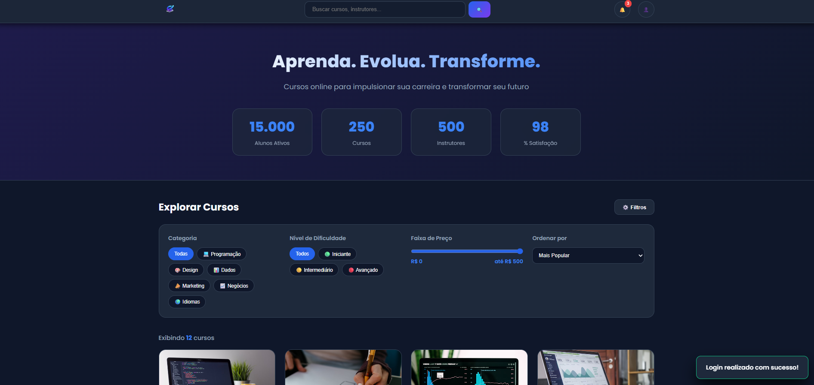
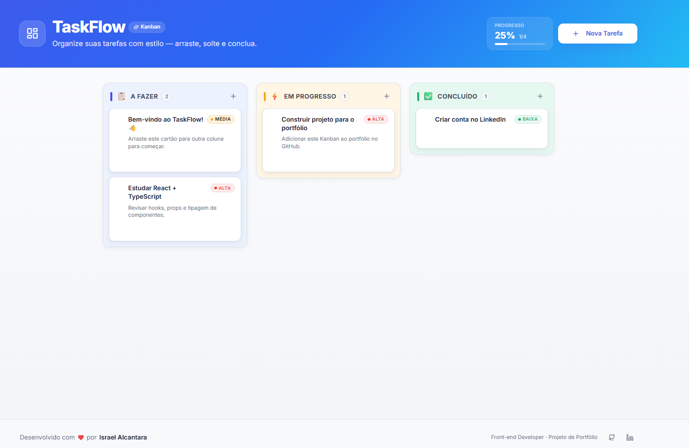
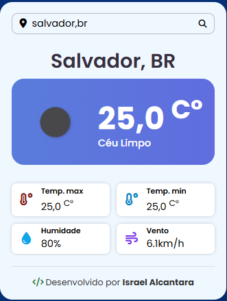
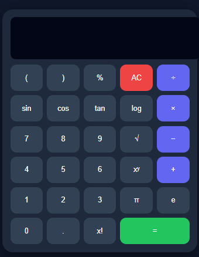
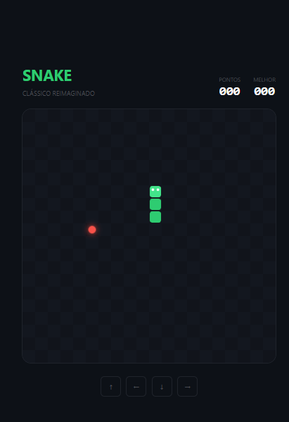
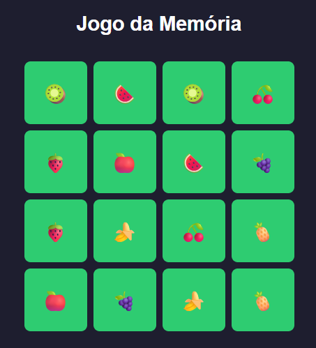

DISPONÍVEL PARA ESTÁGIO E PROJETOS
Eu transformo ideias em experiências digitais.
Sou Israel Alcantara, estudante do 5º semestre de Engenharia de Software na UNIFACS, em Salvador/BA. Desenvolvo interfaces, aplicações web e soluções com foco em usabilidade, organização e resultado.
const developer = {
name: "Israel Alcantara",
focus: ["Front-End", "Software"],
learning: true,
mindset: "build & improve"
};React ⚛
TypeScript TS
01
SOBRE MIM
Tecnologia com lógica,
curiosidade e propósito.
Minha formação em Engenharia de Software vem sendo construída na prática: estudo fundamentos de programação, desenvolvimento web, redes, segurança e arquitetura de sistemas, enquanto transformo esse conhecimento em projetos reais.
Tenho interesse especial em desenvolvimento front-end, suporte em TI, desenvolvimento de software e automações. Gosto de aprender ferramentas novas, organizar processos e resolver problemas de forma simples e eficiente.
Além dos projetos acadêmicos e pessoais, já participei de hackathon e venho evoluindo meu portfólio com aplicações responsivas e experiências interativas.
02
HABILIDADES
Ferramentas que fazem parte
do meu dia a dia.
01HTML5Web semântica
02CSS3Responsividade & UI
03JavaScriptInteratividade
04TypeScriptTipagem e escala
05ReactInterfaces modernas
06Next.jsAplicações web
07Tailwind CSSDesign rápido
08PythonLógica & automação
09FastAPIAPIs
10Git & GitHubVersionamento
11SupabaseAuth & dados
12FigmaPrototipação
03
PROJETOS
Algumas ideias que saíram
do papel e viraram código.

PROJETO EM DESTAQUE · 01
Evolui
Plataforma de aprendizagem com autenticação, catálogo de cursos, filtros, notificações, perfil e acompanhamento de progresso.
Ver no GitHub ↗
PROJETO EM DESTAQUE · 02
TaskFlow
Kanban responsivo para organização de tarefas, com colunas de fluxo, prioridades, progresso e interação por arrastar e soltar.
Abrir projeto ↗
PROJETO · 03
Weather Forecast
Aplicação de previsão do tempo em tempo real com busca por cidade, temperatura, umidade, vento e interface responsiva.
Abrir projeto ↗
PROJETO · 04
Calculadora Científica
Calculadora moderna com operações avançadas, funções trigonométricas, logaritmos, raiz, potência e constantes matemáticas.
Abrir projeto ↗
PROJETO · 05
Snake Game Neon
Releitura do clássico Snake com visual neon, pontuação, recorde e controles responsivos para uma experiência arcade.
Abrir projeto ↗
PROJETO · 06
Memory Match
Jogo da memória desenvolvido com JavaScript, focado em lógica, manipulação dinâmica do DOM e experiência interativa.
Abrir projeto ↗Mais projetos
Ver GitHub ↗04
CONTATO
Vamos construir algo
juntos?
Estou disponível para oportunidades de estágio, projetos, freelas e novas conexões profissionais.